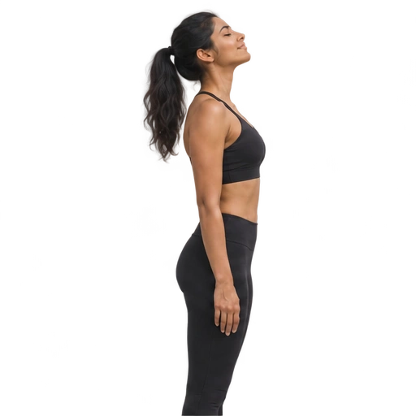
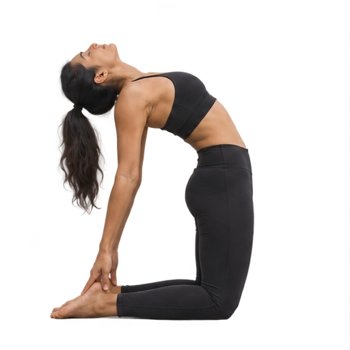
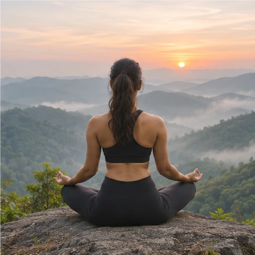

ROOT DOWN. RISE WITHIN.
Stronger.
Calmer.
More you.
A little movement. A deeper breath.
Find your balance with yoga that meets
you exactly where you are.

Ready to rise.
Every body.A practice that welcomes you
Every breath.Space to reconnect with yourself
Your own pace.Progress without the pressure
FIND YOUR FLOW
A practice
for every
version of you.
Some days, you need energy.
Others, a softer place to land.
There’s room for both here.

THE ROOT & RISE PHILOSOPHY
Small moments.
Meaningful change.
We believe feeling better begins with listening.
To your body. To your breath. To what you need today.
Root & Rise is a space to move with intention, explore your strength, and make room for a calmer everyday. Come as you are. Grow from there.
connected
energy
for calm
joy
A LITTLE SPACE IN YOUR DAY
Pause here.
Return to you.
You don’t need an hour to reconnect.
Start with one minute and a single breath.

YOUR NEXT CHAPTER
A little more grounded.
A little more alive.
Your journey starts exactly where you are.
A few things
you might wonder.
I’m completely new to yoga. Can I join?
Absolutely. Start with Gentle Foundations, take breaks whenever you need, and let your teacher know it’s your first practice. Flexibility is something you explore along the way.
What should I bring to my first class?
Comfortable clothing you can move in, water, and a yoga mat if you have one. Ask about mat availability when you enquire.
How do I find the right practice?
Choose Gentle Foundations for a slower introduction, Vinyasa Flow for a more active session, or Balance & Stillness for focus and gentle movement. Enquire with your preferences to find a good starting point.